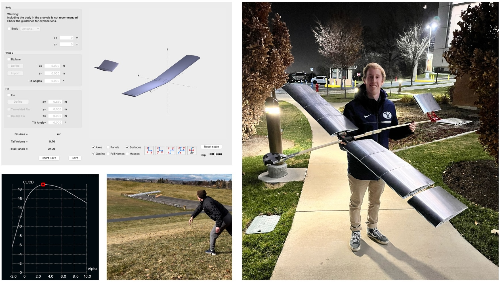
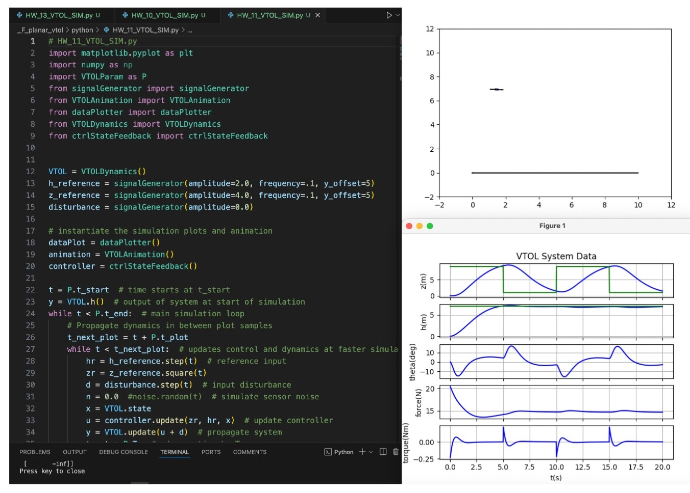
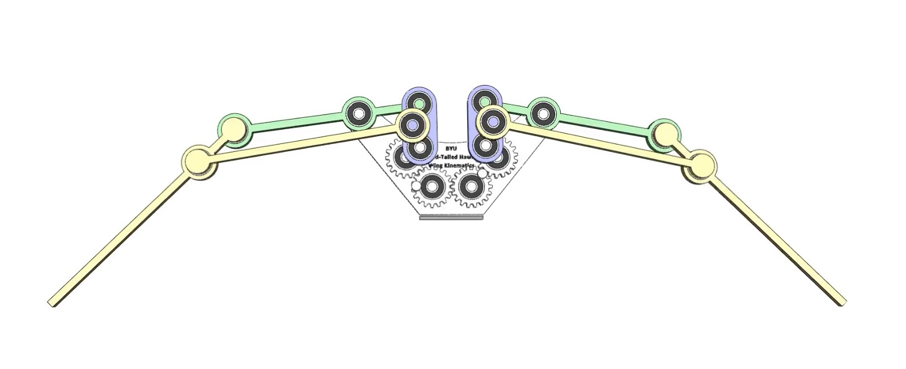
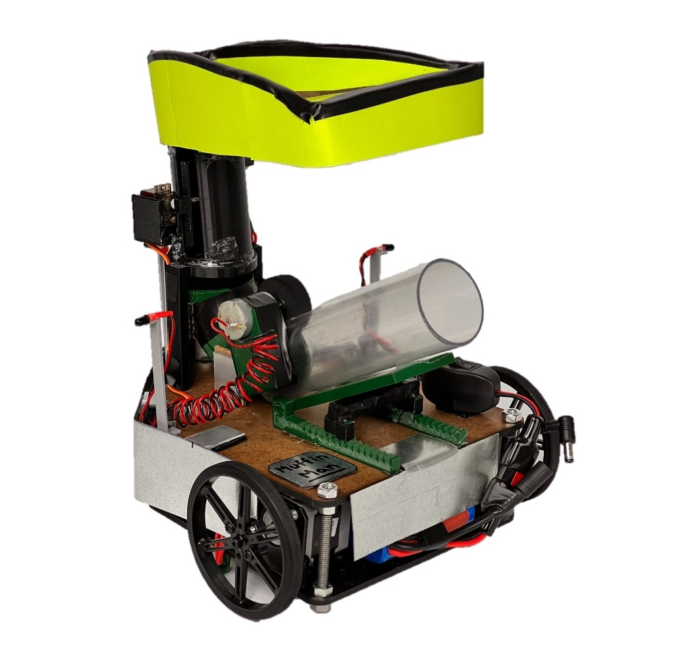

Flight Vehicle Design
ME EN 415
I built foundational knowledge in aircraft and rocket design, covering aerodynamics, structures, stability, propulsion, and performance, with a focus on multidisciplinary tradeoffs. I utilized theoretical concepts, analytic methods, and computational tools like XFLR5, a CFD analysis tool for airfoils, wings, and planes at low Reynolds numbers. For the final project, I designed and built a glider, iterating through foam, metal, and plastic shrink-wrap prototypes to test and refine weight, structural integrity, and aerodynamic performance.
Design of Controls Systems
ME EN - EC EN 483
I developed skills in classical frequency response and time-domain design of control systems, as well as state variable control. I gained the ability to use the Final Value Theorem to predict steady-state behavior and modeled dynamic systems using differential equations, transfer functions, and state-space equations in Python. Using state-space techniques, I designed feedback systems and simulated dynamics and controllers with modern programming languages. During lab sessions, I applied these concepts by implementing control systems on a physical eVTOL "Hummingbird" system.
Kinematics
ME EN 437
I studied the motion of mechanical systems, focusing on the dynamics, velocities, and accelerations of links, as well as non-linkage mechanisms like cams and gears. I gained expertise in analyzing and synthesizing mechanisms, using Python to calculate positions and optimize designs. I simulated systems in SolidWorks to evaluate performance before prototyping. For my final project, I designed and built an animatronic red-tailed hawk, utilizing 3D-printed linkages, gears, and metal ball bearings to demonstrate the practical application of kinematics.
Design of Mechatronic Systems
ME EN 330
I designed and implemented microcontroller-based mechatronic systems by integrating mechanical, electrical, and software subsystems. I developed proficiency in microcontroller architectures, programming, and interfacing with digital and analog circuits, sensors, and actuators. Using tools like PCB design software and mechanical prototyping equipment, I applied principles of analog-to-digital conversion, pulse-width modulation, and serial communication. For my final project, I created a robot featuring IR and color detection sensors, stepper motors for locomotion, a sorting mechanism for black and white ping pong balls, and an aiming/launching system to shoot the balls into specific targets.